If you wish to use this guide to rip assets out of a game and use them for your own benefit and not to mod, kindly piss off
This is a general guide for Unreal Engine 4 game modding that uses Blue Fire for examples
Blue Fire doesn't have a big enough modding scene to fascilitate a guide like this anyway
Credits
-
FatihG_ and Fluffyquack for being patient with me at the start
-
Buckminsterfullerene for making the UE modding discord and pooling resources
-
atenfyr/adolescent for making UassetAPI and GUI
-
RusselJ for making the Unreal Modloader
-
Dmgvol for making cool things
-
Robi Studios for making Blue Fire - you guys are awesome!
The Basics
This section walks you through the basic creation of a patch mod which includes unpaking of the game's pak file, engine setup and packaging and installation of content
You will need to know:
-
The file path to your game - if on steam go to your game in your library and navigate to Properties > Local Files > Browse (By default it is
C:\Program Files (x86)\Steam\steamapps\common\Your game) -
The name of your game's project file - this is the name of the folder in your game's file path that isn't Engine 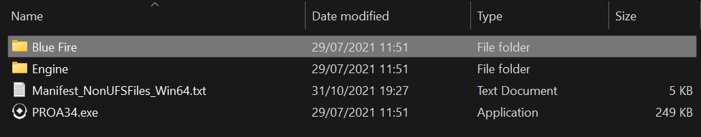
-
The file path to your game's executable -
Game file path/Game name/Binaries/Win64 -
The file path to where your game's content is stored -
Game file path/Game name/Content -
the version of unreal your game uses - either hover over the .exe or right-click the .exe > Properties > Details and the version of unreal is the File Version which should be in the format 4.XX.X - we only care abount the 4.XX because minor versions don't fundamentally change how content is configured 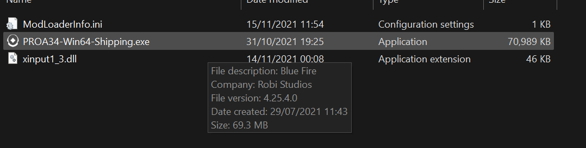
Pak Decompression Options
-
The following section illustrates a few different options for unpacking a pak archive for your game
-
This section doesn't have to be done in any order - use whatever tool you prefer
-
Your game's
Paksfolder should be located in your game'sContentfolder-
If this folder doesn't exist or there is no pak files to unpack and there is only raw assets then you can completely skip this section
-
If there are multiple pak files then your game has split its paks into chunks - This shouldn't affect the process significantly
-
-
There are more options found in Pakers/Unpakers and Pak Explorers that I won't go into detail about in this section
QuickBMS
This method will extract all of the raw assets out of the pak file so if you don't have space then I suggest umodel or fmodel
The advantage of this is immediate access to a file system with correct folder structure
With this method you will need to extract models and textures from the raw assets using umodel or fmodel
-
Download QuickBMS by Luigi Auriemma and unrealtournament.bms and place them into your paks folder
-
If the total file size of your pak/s is below 4 GB drag the bms file onto quickbms.exe (1,000,000 KB is one GB)
-
If not use quickbms_4gb_files.exe 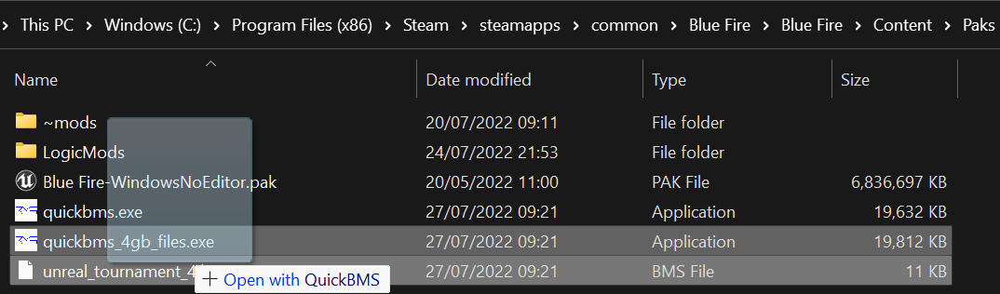
-
A window should pop up asking for the archive
-
Select your pak file that should look like
Game Project Name-WindowsNoEditor.pak -
If your game uses pak chunks type * into the text box instead to extract the folder
-
Now select the output folder (this can be wherever)
-
If compatible then the file should commence extraction 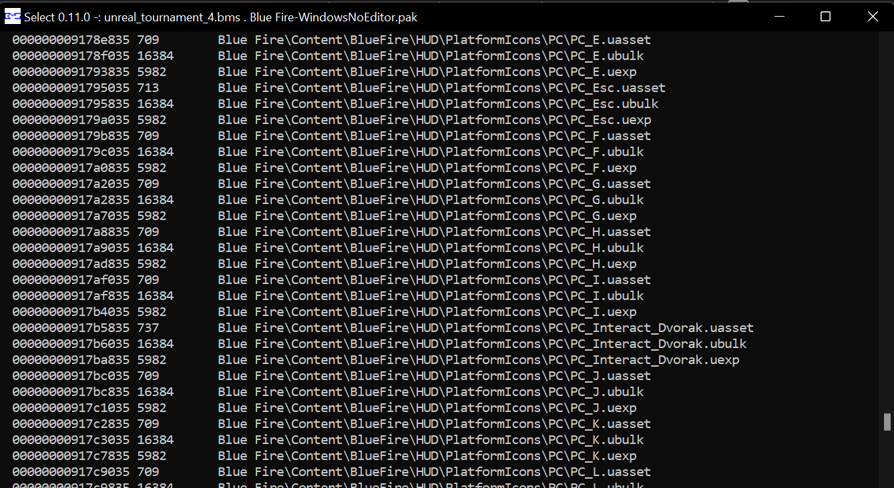
-
If your pak is incompatible, try one of the other methods
Using UnrealPak directly
This method will extract all of the raw assets out of the pak file so if you don't have space then I suggest umodel or fmodel
The advantage of this is immediate access to a file system with correct folder structure
With this method you will need to extract models and textures from the raw assets using umodel or fmodel
With this method you will also need the version of unreal engine installed that your game uses - you will need this later on anyway
This method does not support extracting all pak chunks at once
Here's a video detailing the process
However here's a summary if some things are unclear:
-
Open command prompt and drag unrealpak.exe into command prompt. This .exe should be stored in UE_4.XX\Engine\Binaries\Win64\UnrealPak.exe

-
Then put a space and drag the pak file into command prompt
-
Put a space and type -Extract
-
Put a space after that and enter the directory of the folder you want the assets to be extracted to
-
Press enter and the game files should extract to the folder
-
If there is an error, remember that syntax in important - here's mine for blue fire as reference
"C:\Program Files (x86)\UE_4.25\Engine\Binaries\Win64\UnrealPak.exe" "C:\Program Files (x86)\Steam\steamapps\common\Blue Fire\Blue Fire\Content\Paks" -Extract C:\modding\BF_Unpaked -
If your game is incompatible, try a different method
UEViewer/umodel
Note that UModel has many more features than just exporting, e.g showing related assets and toggling certain views - press H to see these extra functions
-
Install umodel by Gildor
-
Launch the program and you should be greeted with the startup screen 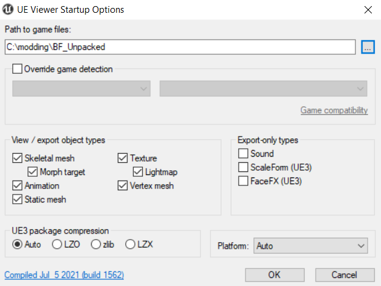
-
If you extracted the raw assets using QuickBMS or UnrealPak then set the folder to the output folder you used using the
...button and proceed -
If not then set the folder to your Paks folder and proceed
-
You should now have access to your game's file system
-
If you got an AES key prompt click here 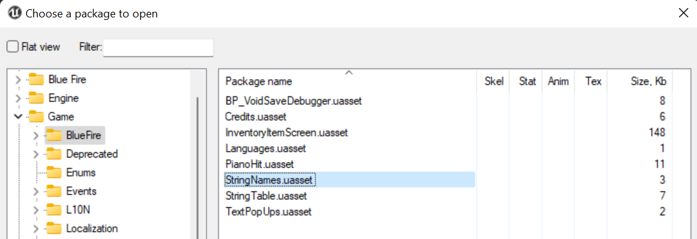
-
Open a package by double clicking it
-
The first time you should get a pop-up asking for the version of the package
-
Enter the version of unreal engine your game uses 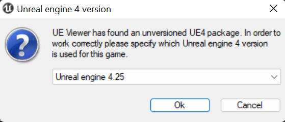
-
Find something you want to replace or modify - start with something simple (I'll be using a texture)
-
Use ctrl + x or the tools tab to export and it will export to the directory selected
Fmodel
-
Install Fmodel by the Fmodel team
-
Launch the program and you should be greeted with the startup screen

-
Set the folder to your Paks folder using the
...button and proceed -
Click on Settings and change the Unreal Version to your game's version (it will have to restart if changed)
-
If there is red dot next to a pak file, go to Directory > AES and read this
-
Find something you want to replace or modify - start with something simple (I'll be using a texture)
-
Double-click the asset (if a texture then the texture will appear on the right - you can then right-click > Save Texture)
Setting up
-
Install the version of Unreal Engine 4 that your game uses from the Epic Games Launcher
-
Open up UE4 and create a blank game project with no starter content (it's unnecessary) 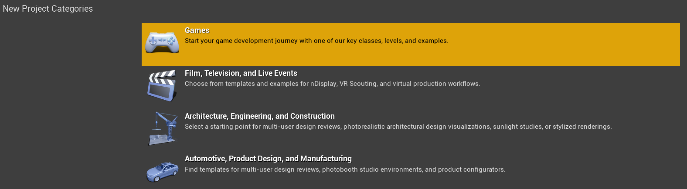 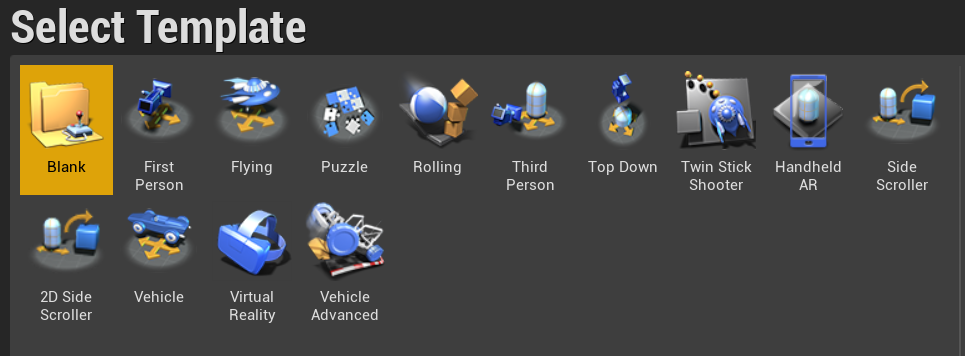
-
Go into edit > project settings and uncheck use pak file 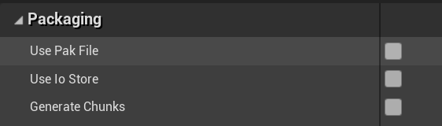
Content Creation
Content creation
I will not cover content creation in this. Just examples.
-
For this example I will use my Fara discord shirt mod
-
In this mod I modified the texture for Fara so that it had a discord logo 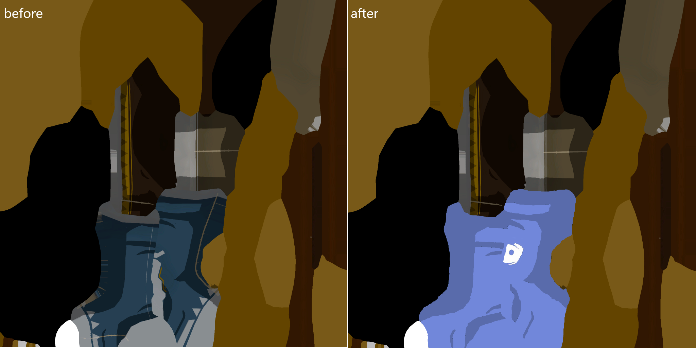
-
Recreate the folder structure that was obtained from exporting the assets - in my case the folders went Game\BlueFire\NPC\Fara\Textures so I must create the folders like this: 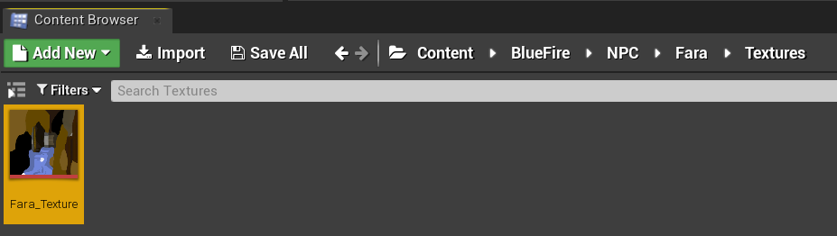
-
Press ctrl+shift+s to save all
Cooking
You can cook the assets in 2 ways:
either:
- Navigate to File > package project > Windows(64-bit)
- Select the folder you want to cook the mod into
or:
- Navigate to File > Cook Content For Windows
- It will output to the Saved/Cooked folder
The first time it will take quite long to build as it is compiling shaders
Final Packaging
-
Create a folder named
The name of your mod_P(the_Pclarifies it as a patch so that it overwrites original game content) -
Create a folder the name of your Game's project name
-
Go into the folder where you packaged your mod and copy the Content folder in
WindowsNoEditor\ProjectNameinto this folder -
Folder structure is very important for UE4 modding so make sure spellings of the folders are the same as they were when exported
-
Download Unrealpak by FluffyQuack and drag the mod folder onto UnrealPak-with-compression.bat 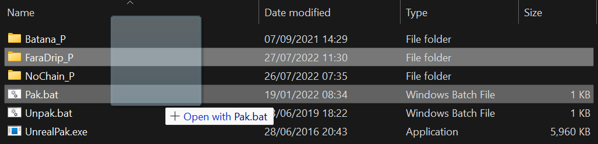
-
This will create a pak file - Make sure the pak file still contains the _P at the end of its name
-
Create a folder in your
Paksfolder called ~mods
(The folder is just to ensure proper load order. The folder can be named anything that starts with a letter after the first letter of the game pak)
- Place the pak file in it and run your game to see if it worked. Hopefully you should find it did.

If the mod worked, give yourself a pat on the back! You have successfully made a patch mod!
Pak files
- Pak files are essentially archive files that store most of the resources that the game in question requires to run (think of them as custom .zip files)
- The game's main pak will always be contained in the
Content/Paksdirectory - Pak files will sometimes be encrypted via AES keys, however these can be easilyfound with AESKeyFinder
- Pak files can also be split into chunks for a bit of extra security
- Pak files are normally able to be viewed with UEViewer or Fmodel
- Pak files can be extracted using tools such as the ones found in Pakers/Unpakers
Mod Loading
- Traditional mods are loaded as pak files in the same directory as the main game pak (these pak files are created using a tool such as unrealpak)
- The content inside these paks files will just be content that has been created and then cooked using the same version of unreal as the game in question
- These mods will likely need a
_Pat the end of their name to remove the mount point of the pak and clarify it as a patch so that it overwrites original game content - The mods should be place in a mod folder (
~modsworks for every game) to ensure proper load order (so the main game pak doesn't overwrite the mod's content) - Paks are loaded alphabetically in each directory
- Mods can also be loaded via modloader frameworks such as the Unreal Mod Loader (a tool that allows the execution of any arbitrary blueprint code) and UE4SS (a tool that allows Lua scripting via reflection)
Cooking
- Before being put in a pak file, assets undergo a process called cooking where the data used by the engine is stripped so only the data the game requires to run is in the final pak
- You cannot 'decook' content just as you cannot 'decook' a steak once grilled
- Cooked assets are not able to be edited in the engine as that data has been stripped however they can be edited through the use of Asset Editors
- After editing they can still be put in a mod as these editors should handle binary equality for you
Unreal files
- Data is stored in .uasset or .umap files both before and after packaging(.umap files are only used for levels), however after cooking the file structure is different from the structure beforehand
- If the event driven loader is used by the game (introduced around version 4.15) then the cooked file is also split up into the .uasset and the .uexp for faster loading
- In the above case the .uasset/.umap file defines the structure of the asset while the associated .uexp holds the data
- In some cases where more external data is required a .ubulk file is generated which stores this external data such as baked lightmaps for levels
Dummying
- There is a trick called dummying that can be utilised in many situations
- How it works is that you create an empty asset that is the same name and type as an asset in the original pak file
- Another asset will reference this and will contain references after cooking
- In final mod packaging, you leave out the dummy asset
- This means that in game the asset that was dummied is used instead
Examples
Mesh modding
- If you want the mesh to continue to use the materials it uses normally then you would dummy the materials/material instances that it uses
- In packaging these are removed and the mesh uses the original materials in game
Blueprint modding
- You can dummy an actor or function library to use a function from it
- The dummy asset is created and a function is added with the same name, parameters and output as the original one
- Another actor (loaded via some means) calls this function from the dummy
- The dummy is removed and the function is called from the original blueprint in game
If file extensions aren't showing in file explorer enable them in the view settings
Disabling Objects
This is a useful way to disable actors in game - can be used for stuff like removing annoying enemies and effects among other things
- Open umodel and find the content you would like to disable (In my case the main menu castle)
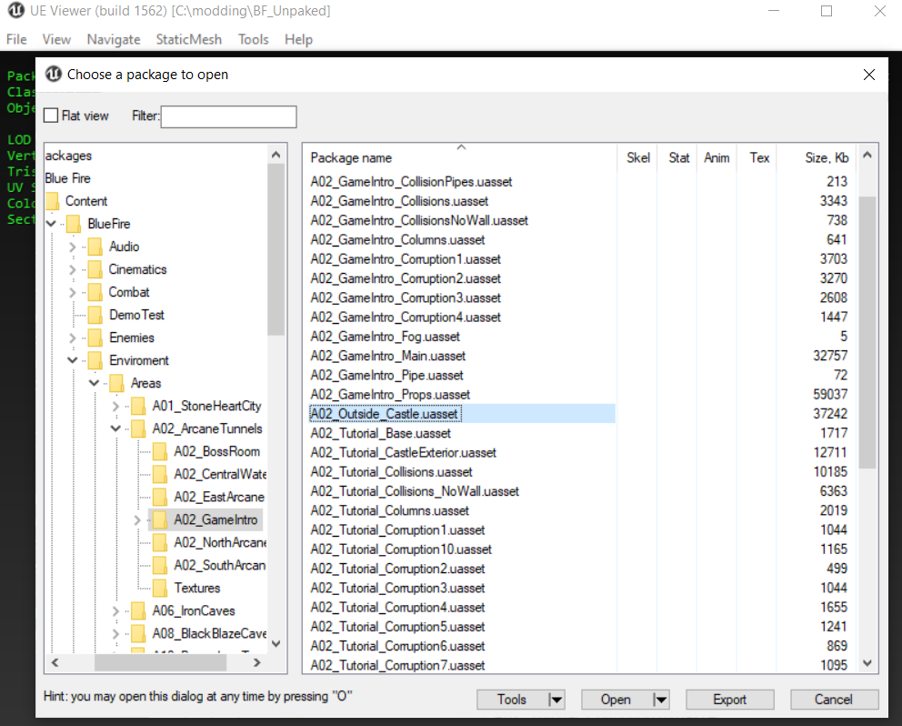
- Recreate the observed folder structure like you would in final paking (because we are dealing with cooked uassets)
A useful shortcut for creating new folders is ctrl+shift+n and you can enter the name and double-press enter to go inside the folder
-
Create a blank text document with the same name as the uasset you want to disable and change the file extension to .uasset 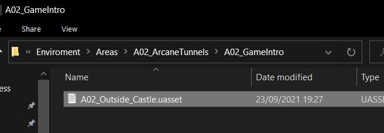
-
Package the folder, place in mod folder and run the game 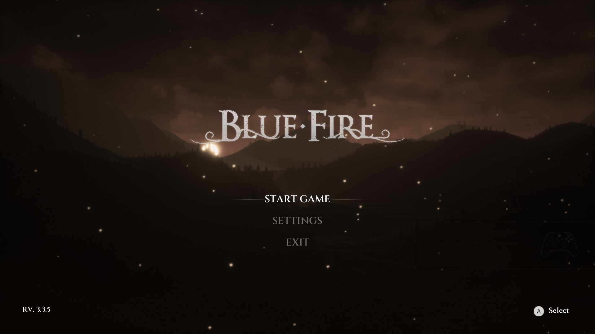
-
The content should not appear if done correctly
To create a child material either copy an existing one and use this method or use the in engine method - this also allows you to change parameters that may not be present in the existing one
Via UAssetGUI
- Download UassetGUI by atenfyr
- Set the version to the version of UE4 your game uses
- Open the target material and search the exports for parameter values
- These can be changed in any way you wish

- File < Save as and recreate the file structure like normal
- Delete the .bak files (and the .uasset because you only changed values) and package
In Engine
- Export the material instance you wish to modify normally using umodel
- Create a new dummy material in your project in the same location and create parameters inside the material for each of the parameters in the props.txt
- Set them with their default values and names
- Connect all the parameters to the main node
- How you connect is not important - what's important is they are connected (I used math nodes) 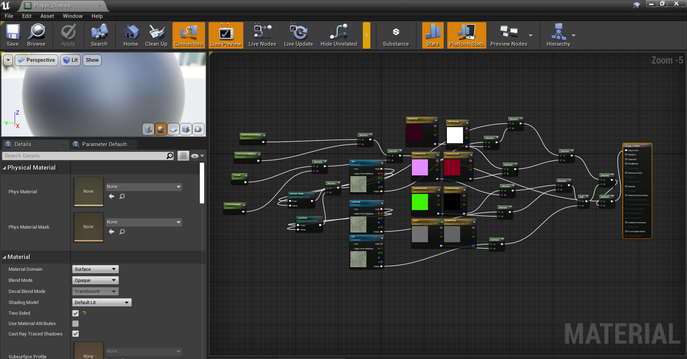
- Right-click and create a material instance to either replace an existing one or to use yourself
- You can now edit the parameters that are used as you please
- Once you are happy with the changes, save and package the project
- Package as normal except remove the parent material asset as it was a dummy
Dialogue
This guide will cover using the .locres text tool
These mods have major compatibility issues but replacement mods in general do
-
Run the executable and select a .locres file extracted from the
Localizationfolder -
This is a raw asset so no need to specifically use umodel or fmodel
-
This will generate a .txt containing all of the dialogue in the game
-
Make any changes you wish
-
Once you are done convert the .txt back to .locres using the executable
-
Pack the file with the right file structure and your changes will be saved
Level Editing/Replacing
The process is exactly the same as adding any level in unreal engine
For now this just details replacing the course model but I do have a project brewing...
- First export the course model
- Open in your 3d software of choice and start editing/ replacing content
- If there also a model for damage zones then import that too
- All collision will have to be done manually
- In blender, to make collision you must name it UCX_corresponding model_collision number
- When adding collision use shapes with no inward sloping faces(cuboids and triangular prisms)
- Alternatively, you could turn on advanced collision in engine for convenience at the cost of extra processing needed for its calculation or add collision in the model viewer by turning on collision view
- Import the course model into the proper folders in your unreal project
- Link materials and material instances like normal
- Save content and package
UAssetGUI
- UAssetGUI is a powerful tool by atenfyr that is a wrapper of UAssetAPI
- It allows the editing of unreal engine 4 assets through an intuitive user interface
- This skips having to dummy assets like materials just to change values that are already in the .uasset
- However for larger-scale mods such as my randomiser, UassetAPI may be able to suit your needs better
- First, download the .exe and prerequisite .dlls from this page(It needs dotnet to run)
- Extract a .uasset and .uexp using Fmodel's export function or umodel's save packages function
- Right-click any .uasset(include the associated .uexp inside the same folder) and click "open with"
- You can then create an association with uassetGUI by finding it in the pop-up and checking the "always open files of this type with" checkbox
- You can now see the exports and their data in the file - such as parameters of a material or the enum index of an item in an enum
- You can now edit these logically and save it to a separate file using save as or ctrl+shift+s or save to the same file using save or ctrl+s
- You can now recreate the file structure and pak and it should work as expected
UAssetAPI
Please note that this may be quite complicated for those new to C# or programming in general as this is object oriented programming
-
UassetAPI is a C# API made by atenfyr that allows extensive editing of unreal engine 4 assets
-
The main advantage of this API over UAssetGUI is that with a little C# experience, very impressive edits can be made to .umaps and .uassets very quickly
-
This will be mostly done through iteration
-
First download the UassetAPI source code using github desktop or as a .zip file
-
Then open the .sln in visual studio(Make sure dotnet 4.7.2 SDK and compiler are installed for visual studio) and build UassetAPI
-
This will generate some .dlls in UassetAPI's debug folder which we can reference in our visual studio project
-
Set up a visual studio project from a template (for applications I use a winforms template and for general .uasset editing I use the command line interface)
-
This will generate a simple template in dotnet 4.7.2 that can be used with UassetAPI (if you want to add source control I recommend the github extension by github and then you can add source control from the file dropdown)
-
reference the generated .dlls from the project dropdown and you're ready to start
-
The basic setup you'll want to start in the namespace with will be something like
using System;
using System.Collections.Generic;
using System.Linq;
using UAssetAPI;
namespace WhateverYouCalledYourProject
{
class Program
{
static void Main(string[] args)
{
static public void RandTransform(string filepath, string endpath)//I make this a function so it's callable for multiple uassets
{
Uasset y=new Uasset(filepath,UE4Version./*Put the corresponding version-intellisense will give you some suggestions*/)
MessageBox.Show($"Data preserved:{(y.VerifyBinaryEquality() ? "yes" : "no")}");
//checks if data has been parsed properly. If it has not then report it to atenfyr using his issue templates here:
//https://github.com/atenfyr/UAssetAPI/issues/new?assignees=&labels=&template=bug_report.md&title=
//for loop loops through exports(alternatively use a foreach loop)
for (int i = 0; i < y.Exports.Count; i++)
{
Export export=y.Exports[i];
if (export is NormalExport ex)
{
//loop through subcategories to find whatever you're looking for
for (int j = 0; j < ex.Data.Count; j++)
{
//do whatever you want to the subcategories
}
}
}
y.Write(endpath); //remember to do this otherwise your edits will not be saved
}
}
}
}
You can do checks for certain exports using if statements
e.g if(ex.Data[j].Name.Equals(FName.FromString("Item")) && ex.Data[j] is BytePropertyData byt){}
And then do things to the the export byt in this example like
byt.Value = y.AddNameReference(FString.FromString(Items[19]));
Using this method you can loop through multiple files very quickly to make edits that would have taken ages to do manually with UassetGUI
Below I will include some code snippets for editing common PropertyData types:
Enums
static public void Enums(string filepath, string endpath, int indexes)//I state the number of indexes because sometimes eh.Count causes an index out of range error
{
//Load enum
UAsset y = new UAsset(filepath, UE4Version.VER_UE4_25);
//Only one export so for loop isn't needed
Export baseUs = y.Exports[0];
if (baseUs is EnumExport us)
{
List<Tuple<FName, long>> eh = us.Enum.Names;
for (int j = 0; j < indexes; j++)
{
eh[j] = new Tuple<FName, long>(us.Enum.Names[j].Item1, 2/*Enum index you wish to use*/);
}
}
y.Write(endpath);
}
Location
static public void RandTransform(string filepath, string endpath)
{
UAsset y = new UAsset(filepath, UE4Version.VER_UE4_25);
for (int i = 0; i < y.Exports.Count; i++)
{
if (y.Exports[i] is NormalExport us)
{
for (int j = 0; j < us.Data.Count; j++)
{
if (us.Data[j].Name.Equals(FName.FromString("RootComponent")) && us.Data[j] is ObjectPropertyData ob)
{
//MessageBox.Show(y.Exports[Convert.ToInt32(ob.Value.ToString())].ObjectName.ToString());
if (y.Exports[Convert.ToInt32(ob.Value.ToString())] is NormalExport egg)
{
foreach (var data in egg.Data)
{
if (data.Name.Equals(FName.FromString("RelativeLocation")) && data is StructPropertyData loc)
{
loc.Value = new List<PropertyData>
{
new VectorPropertyData(FName.FromString("Vector"))
{
Value= new FVector(50,50,50)
}
};
}
}
}
}
}
}
}
y.Write(endpath);
}
For rotators replace:
if (data.Name.Equals(FName.FromString("RelativeLocation")) && data is StructPropertyData loc)
{
loc.Value = new List<PropertyData>
{
new RotatorPropertyData(FName.FromString("Vector"))
{
Value= new FVector(50,50,50)
}
};
}
with this:
if (data.Name.Equals(FName.FromString("RelativeRotation")) && data is StructPropertyData rot)
{
rot.Value = new List<PropertyData>
{
new RotatorPropertyData(FName.FromString("Rotator"))
{
Value= new FRotator(50,50,50)
}
};
}
Blueprint mods
The following section details the creation of mods that use blueprints loaded in game to execute blueprint code
In this guide I use Unreal Mod Loader as the loader as it is the most accessible and general tool
However there are many other ways that blueprints can be loaded e.g via startup map, inheritance dummying, game-mode editing or level blueprint loading
But the mod creation part stays relatively the same - effectively the same as any content creation for an unreal engine 4 game with blueprints
UML setup
-
We will use UML to inject custom actors to run blueprint (Unreal's visual scripting system)
-
This allows addition of custom logic, events, etc.
-
Download the Universal Unreal Modloader by RusselJ
-
This will contain a .exe, some .dlls and some .profile files in the profiles folder
-
If your game does not have a .profile file contained in the release setup instructions to create one are here
-
Run the .exe and then run the game to check that everything works fine
-
This should also generate a folder called
LogicModsin Paks and a folder calledCoreModsin Content
.profile creation
-
To set up the .profile file, you will need to know 2 things: the name of the game binary located in
Game store/Game name/Game project name/Binaries/Win64and the version of unreal engine the game runs on (found by hovering your mouse over the same binary and looking at the version number) -
Copy the BasicExampleGame.profile and rename it to the name of your game binary
-
Then set the values according to the instructions using the UE4 version of your game (1 is true and 0 is false)
-
Hopefully the signatures UML uses work for your game - if not then you will need to reverse engineer the game (for help consult Russel's Exclusive Disco Club)
-
Share the new .profile to the
#profileschannel in Russel's Exclusive Disco Club so that other's won't have to go through this process
Project setup
-
Open the folder where the Engine folder is located and copy the name of the other folder in that directory
-
Now create a new Unreal Engine project with this name
-
In project settings set pak chunking to true and keep use pak file checked
-
Create a folder called
Mods(remember capitals) and then create a new folder with the name of the mod -
Now create a new blueprint actor (I normally name it
ModActor) -
Create a PrimaryDataAsset and tick label assets in my directory
-
Then assign the PrimaryDataAsset a pak chunk number
Mod creation
- Now that you have your mod actor, the possibilities are essentially endless
Installing
-
Cook the project as normal
-
Rename the pak chunk you assigned to the name of the folder
-
Place in the LogicMods folder first generated when you ran the UML exe
-
Run the game and you should see the mod registered as loaded in the UML console
Auto Injector setup
-
Out of the box, the modloader comes with an auto-injector (instructions are in the README but I'll explain here anyway)
-
Open the ModLoaderInfo.ini and edit the path to where your modloader dll is stored
-
Copy all the files(README isn't needed) to where the game binary is stored (in
Game store/Game name/Game project name/Binaries/Win64) -
Run the binary and the modloader should hopefully auto-inject into the process
Pakers/Unpakers
These are tools that are capable of unpaking or creating pak archives
-
QuickBMS by Luigi Auriemma and unrealtournament.bms allow for fast unpaking of pak files
-
unrealpak scripts by Fluffyquack which allows creation of compressed pak files
-
u4pak by panzi which can also mount, list and check pak files
-
rust-u4pak by panzi which is an alternate version which doesn't require installing python as it is written in rust
-
ue4pak by Vilsol which also allows outputting the class trees of pak files
Pak Explorers
These are tools capable of parsing a game's pak file and allowing the display and export of game files contained inside
-
Umodel by Gildor is the most reliable and fast, allowing loading of both loose and paked files as well as a command line
-
Fmodel by the fmodel team allows more extensive support for certain formats such as sound files and allows export of (irreversibly) json-serialised assets - also has more customisation options
-
UnrealPakViewer by jashking allows powerful filtering of pak file contents however can only export to json and csv (linked to my repo for now as I'm waiting for my pull request for the guide translation to be accepted)
Asset Editors
These are tools able to parse and edit cooked .uasset and .umap files
-
UAssetAPI by atenfyr is an API that can read and modify UE4 game assets via C# scripting and reversible .json export - is brilliant for large scale edits or automation
-
UAssetGUI by atenfyr is more friendly than coding with uassetAPI due its interface - also it has dark mode :p
-
Heilos's Asset editor is an alternative to UAssetGUI
-
DAUM by Drillboy Jenkins is a CLI program written using UAssetAPI with a lot of flexibility
-
DRGEditor by craigmc08 is another alternative that is more specific to Deep Rock Galactic
Locres Editors
These are tools that can edit localisation files
-
locres editor (unknown author) that allows edits via reversible .txt export
-
UE4LocalizationsTool by amr shaheen allows edits in program or via reversible .txt export
-
UnrealLocres by akintos is CLI program that allows edits via reversible .txt export
Resources
These are other sources of information and support for you!
These resources have served me well throughout my own UE modding journeys and some even helped in putting this guide together
Discords
in order of relevance
- Blue Fire is the official server for blue fire! There is a modding channel and a tools and resources channel which is basically this section of the guide
- UE modding is a small server aiming to pull together and gather tools and knowledge of UE modding - good if you want extra tools or more advanced questions
- DRG modding is the modding server for Deep Rock Galactic - also made in the same version of UE and is very active due to it's native modding support
- Ghostrunner modding is the combined modding and speedrunning server for Ghostrunner
- Code Vein and Scarlet nexus modding is very useful for guides
- Bloodstained modding is the modding server for the Bloodstained games
Extra discords can be found in UE modding
Other Guides
- My original steam guide on Blue Fire modding (nothing there that isn't here)
- Dmgvol's GRGuides which covers a lot of what is covered here (this guide was based on this)
- atenfyr's astroneer modder's guide which is relevant ignoring the astroneer specific parts
- Buckminsterfullerene's BP tutorials for DRG - relevant from 3 onwards
- DRG modding is a collection of guides by the DRG modding community
- GHFear's BP guides - specific to RusselJ's modloader
- Spyro Reignited modding guide
- Satisfactory modding guide is specific, but a lot can be learnt from it
- UE4 documentation is useful for those newer to the engine